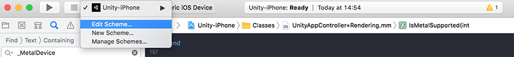
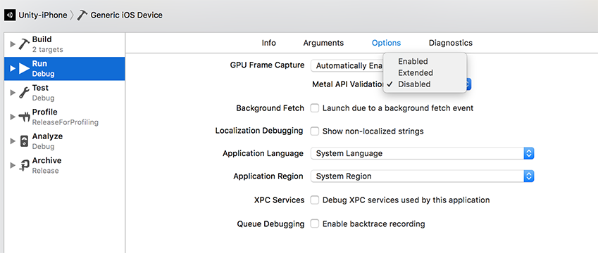

Metal is the standard graphics API for Apple devices. Unity supports Metal on iOSApple’s mobile operating system. More info
See in Glossary, tvOS and macOS (Standalone and Editor).
Metal has a larger feature set on Apple platforms than OpenGL ES. See the advantages and disadvantages of using Metal below.
Advantages of using Metal
Disadvantages of using Metal
iOS and tvOS have Metal support for Apple A7 or newer SoC-s.
macOS has Metal support for Intel HD and Iris Graphics from the HD 4000 series or newer, AMD GCN-based GPUs, and Nvidia Kepler-based GPUs or newer.
Minimum shader compilation target is 3.5.
Metal does not support geometry shadersA small script that contains the mathematical calculations and algorithms for calculating the Color of each pixel rendered, based on the lighting input and the Material configuration. More info
See in Glossary.
To make the Unity Editor and Standalone Player use Metal as the default graphics API, do one of the following:
In the Editor, go to menu: Edit > Project SettingsA broad collection of settings which allow you to configure how Physics, Audio, Networking, Graphics, Input and many other areas of your project behave. More info
See in Glossary > Player and enable Metal Editor Support.
Or, if you are using MacOS, open Terminal and use the -force-gfx-metal command line argument.
Metal is enabled by default on iOS, tvOS and macOS Standalone Players.
Xcode offers Metal API validation, which you can use to trace obscure issues. To enable Metal API validation in Xcode:
In Unity, build your Project for iOS. This generates an Xcode project.
Open the generated Xcode project in Xcode and select Edit Scheme.


Validation errors break code execution in the XCode editor, and appear in device logs.
Note: Enabling validation increases CPU usage, so only enable it for debugging.
Metal allows you to select a GPU device when you run your application. This enables you to test your Project on different GPU setups, or save power by using a low power GPU.
To change the Unity Editor target GPU device, select menu: Unity > Preferences… > General and set the Device To Use:
To change the Standalone Player target GPU device, start your application (or select menu: File > Build and run) and set the Graphics device to use to the relevant GPU in the dialog that appears:
Metal allows you to use memory-less render targets to optimize memory on mobile devices introduced in iOS and tvOS 10.0. This enables you to render to a RenderTexture without backing it up in system memory, so contents are only temporarily stored in the on-tile memory during renderingThe process of drawing graphics to the screen (or to a render texture). By default, the main camera in Unity renders its view to the screen. More info
See in Glossary.
For more information, see RenderTexture.memorylessMode.
2018–05–22 Page published with editorial review
Added advice on using Metal in 2017.4
Did you find this page useful? Please give it a rating: